Goals
- Understand repositories
- Time travel is hard, Git makes it easy
- Git tools
- Working with others (Pull Requests)
- Avoiding conflicts
- Recipes
You are going to be great at Git
How do you get to Carnegie Hall?
Installing Git
- Windows - https://git-scm.com/download/win
- OSX - Built-in (Xcode and Command Line Tools)
- Linux - through your package manager if not built-in
Spite driven development
A story as old as time
Git features
- Speed
- Simple design
- Strong support for non-linear development (thousands of parallel branches)
- Fully distributed
- Able to handle large projects like the Linux kernel efficiently (speed and data size)
Since its birth in 2005, Git has evolved and matured to be easy to use and yet retain these initial qualities.
Wait did you say EASY?

Take it one step at a time
Repositories
Your own small universe
Command: git init
What is this distributed thing?
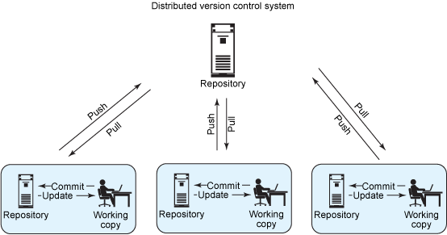Vocabulary
- Push
- Pull
- Local
- Remote
- Working Copy
Staging
If our repo is a universe then major points in history are commits. A point in history is when something changes. What we stage becomes a commit and is added to the history.
Command: git add <file or directory>
Command
git add src/save.rb
Common Command
git add .
Commit
Commits tell a story so they require a message and a series of messages makes a history
Command: git commit -m"<What you changed>"
Command
git commit -m"Added awesome feature that saved mankind"
History
Branches
An infinite number of alternative 1985s
Our reality is called master
We can create other realities whatever we want
Command: git checkout -b <branch name>
Command
git checkout -b pks/save_world
Lets give it a try
Time Travel
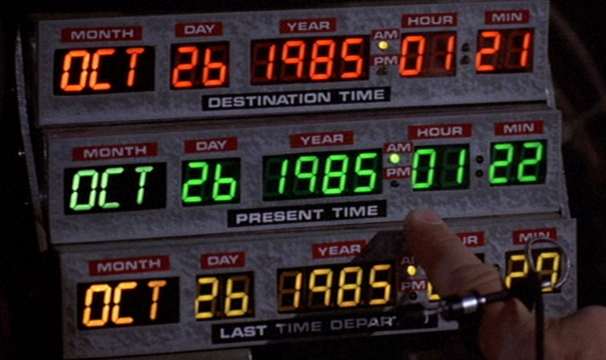How do we observe time in git?
commit bd139290f6efec5ca719e85e658d5c9a22d1ee37
Author: Paul Scarrone <ninjapanzer@gmail.com>
Date: Tue Oct 6 22:13:36 2015 -0400
Basic repo description and commands
commit ef3c55efc222d9857f7b6be84f96a3fce7e137eb
Author: Paul Scarrone <ninjapanzer@gmail.com>
Date: Tue Oct 6 18:11:56 2015 -0400
Basic section organization
commit 929717ccdc3977ae08a662853be9fa72131c2fd9
Author: Paul Scarrone <ninjapanzer@gmail.com>
Date: Tue Oct 6 16:33:43 2015 -0400
git to the future slides initial
Command: git log
Command
git log
Lets take another look

by xkcd
Give a hoot, don't pollute
Your master branch
- Start all work on a new branch
- Name your branch the big picture of the work it will contain
- Keep your work on topic
Command: git checkout -b my_feature
Add some commits
On your feature branch
- Add a new file called 'first_file.txt' and put some text in it
- Stage the file
- Create a commit with the staged files
Command: git add first_file.txt
Command: git commit -m"Added first_file"
Congratulations master of time
Changing Branches
Branches represent alternate histories
Command: git branch
$ git branch
* master
pks/alternate_1985
Command: git checkout <branch name>
$ git checkout pks/alternate_1985
M index.jade
Switched to branch 'pks/alternate_1985'
Command
git branch
Command
git checkout my_feature
Welcome Time Traveler
Checkout
You can move files between branches
Command: git checkout master -- file
Checkout
Or just go back to the last time you committed a file
Command: git checkout -- file
Reset
You can remove all of your changes and go back to a clean working copy
Command: git reset --hard HEAD
Reset
Or unstage something you staged with add
Command: git reset file
Reset Example
Changes not staged for commit:
(use "git add <file>..." to update what will be committed)
(use "git checkout -- <file>..." to discard changes in working directory)
modified: time_travel.jade
no changes added to commit (use "git add" and/or "git commit -a")
Command: git add .
Reset Example
Changes to be committed:
(use "git reset HEAD <file>..." to unstage)
modified: time_travel.jade
The-Messengers-MacBook-Pro:git_to_the_future samuraipanzer$ git reset time_travel.jade
Unstaged changes after reset:
M time_travel.jade
Command; git reset git reset time_travel.jade
Reset Example
Changes not staged for commit:
(use "git add <file>..." to update what will be committed)
(use "git checkout -- <file>..." to discard changes in working directory)
modified: time_travel.jade
no changes added to commit (use "git add" and/or "git commit -a")
Tools
What is life without good tools to simplify our activities
GUI's
Git is a command line utility in the Linux tradition but no one said you have to use the command line.
Don't let anybody tell you how to work.
Git Gui
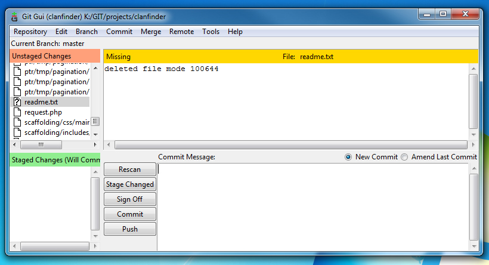This one is packaged with Git
Command
git gui
Github Desktop

And Many More
Collaboration
Github

GitHub
My personal favorite. Great performance and reliable features
Features
- Popularized the PR (Pull Request)
- Popularized Forking
- Popularized Markdown as a documentation style
- Code first
- Its for developers (Unlike Sourceforge)
What is a PR
A pull request is a method of submitting contributions to an open source project.
More specifically it allows you to contribute code to a project that you do not own and do not have write access to.
Open Source Projects
The first step in being a contributor to a Open Source Project is to read their contributor guidelines, look at issues, and open pull requests
Step one Fork
Step two Clone
git clone repo_url
Where is the Clone URL
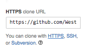Step three Make a branch
git checkout -b pks/best_feature_evar
Step four Commit
git add .
git commit -m"I do great work"
Step five Push
git push origin/master
Step six Open your Pull Request
Back to Github
Compare Branches
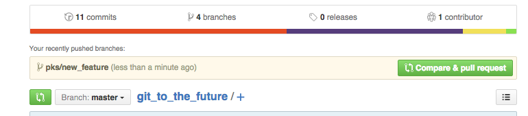Create Pull Request
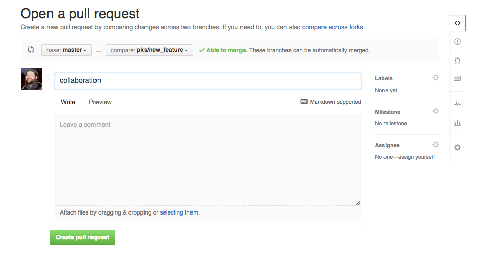Its Alive
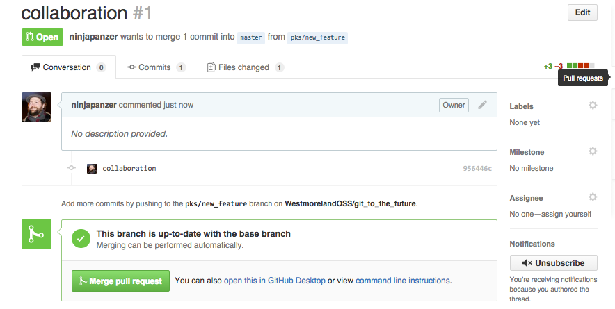Lets Try It
Avoiding Conflicts
By thinking ahead
Thanks Soonho Kong
Slides
Merge vs. Rebase
Merge (Fresh)
Merge (Doing Work)
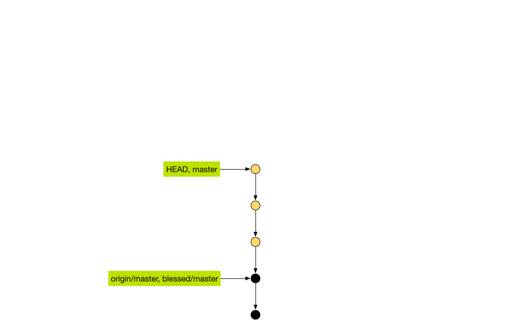Merge (Push to Remote)
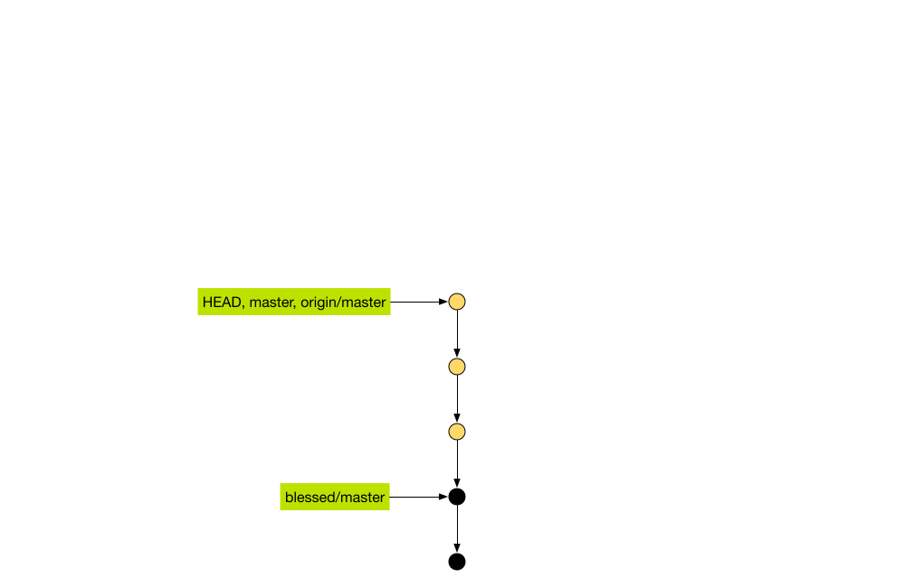Merge
$ git push blessed master
Counting objects: 28, done.
Delta compression using up to 4 threads.
Compressing objects: 100% (9/9), done.
Writing objects: 100% (9/9), 955 bytes | 0 bytes/s, done.
Total 9 (delta 6), reused 0 (delta 0)
To git@github.com:dreal/dreal.git
! [rejected] master -> master (non-fast-forward)
error: failed to push some refs to 'git@github.com:dreal/dreal.git'
hint: Updates were rejected because a pushed branch tip is behind its remote
hint: counterpart. Check out this branch and integrate the remote changes
hint: (e.g. 'git pull ...') before pushing again.
hint: See the 'Note about fast-forwards' in 'git push --help' for details.
Merge (git fetch –all)
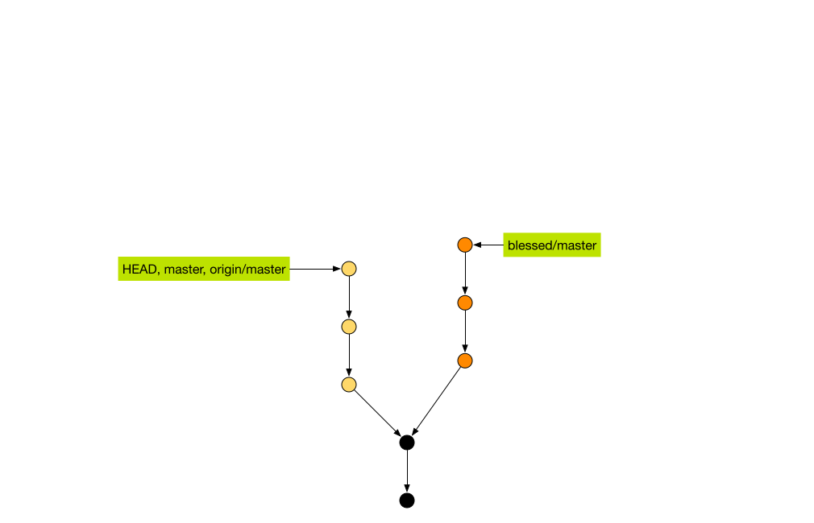Merge (git merge origin/master)
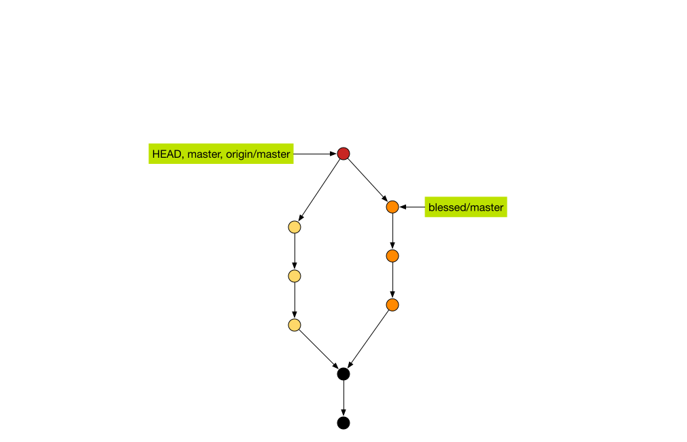Merge (git merge origin/master)
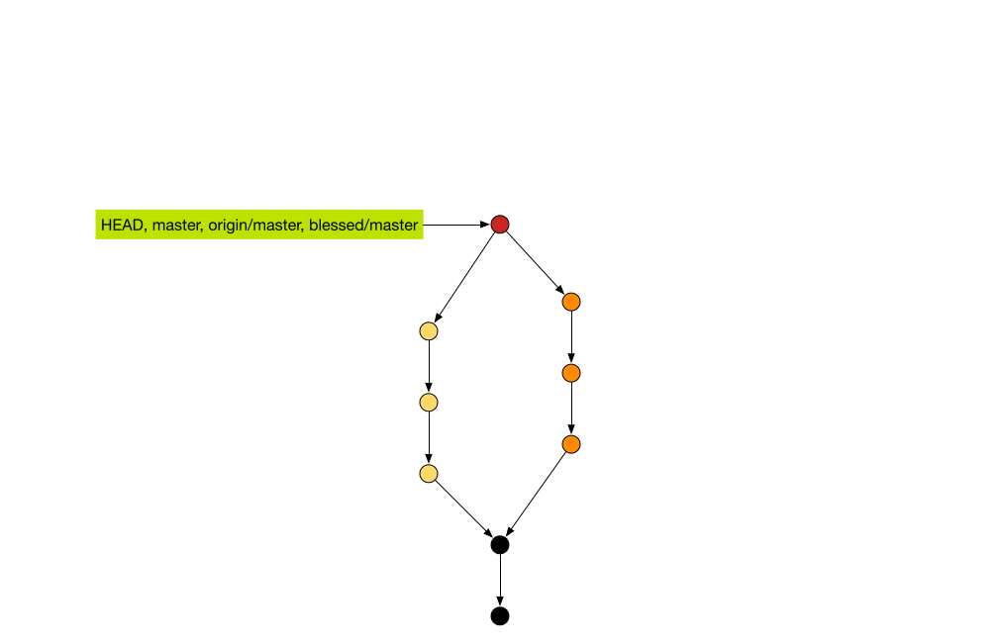Merge Hell
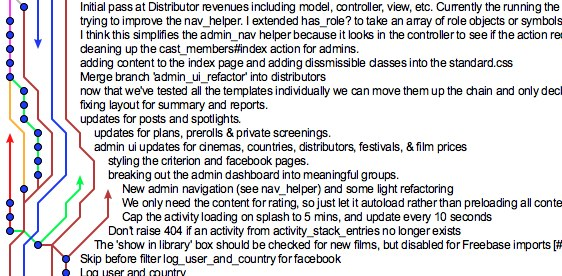Merge Hell!

Merge Hell!!!

Rebase (git fetch -all)
Rebase (git rebase origin/master)
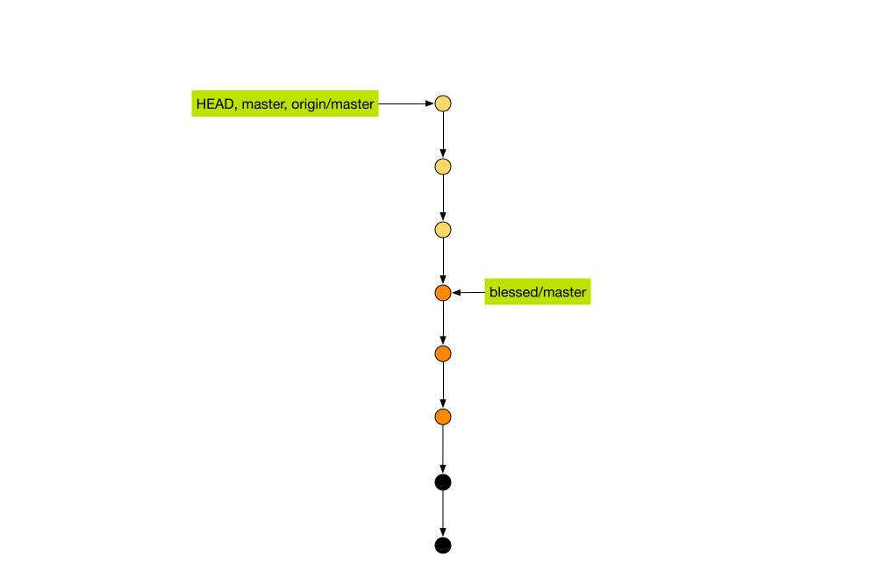Rebase (git push origin master)
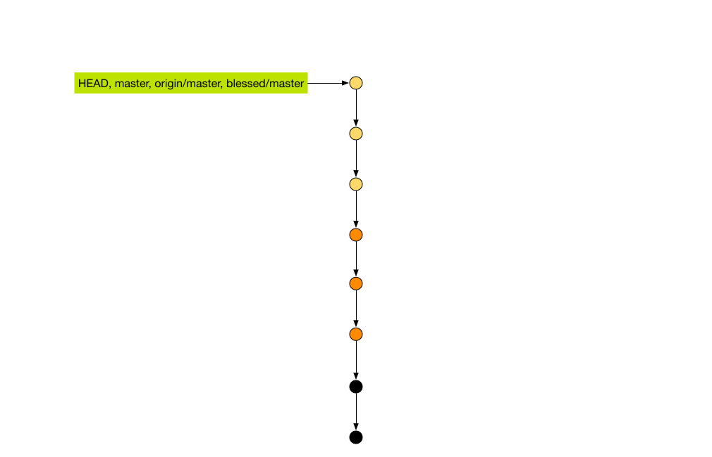Always try to Rebase over merge
- Rebase keeps the commits linear
- Merge should show checkpoints when features are completed (Merge PR)
My Recipes
New Project
- Make a new folder on your computer and start working
- When something builds initialize your repo
- git init
- git add .
- git commit -m "Starting working on awesome project"
- Go to Github and click new repo
- Do not initialize with a Readme
- Copy the second block of git commands
- Paste them into your terminal
- Party!
Try It!
Existing Project
- Check to make sure your branch is in sync
- git fetch
- git status
If you see this you can move on
Your branch is up-to-date with 'origin/master'.
Existing Project
If you didn't then we sync up
Your branch is ahead of 'origin/master' by 1 commit.
Your branch is behind 'origin/master' by 1 commit.
Are all of your files committed
Changes not staged for commit:
(use "git add <file>..." to update what will be committed)
(use "git checkout -- <file>..." to discard changes in working directory)
modified: index.jade
Untracked files:
(use "git add <file>..." to include in what will be committed)
my_recipe.jade
no changes added to commit (use "git add" and/or "git commit -a")
Clean working copy
On branch master
Your branch is up-to-date with 'origin/master'.
nothing to commit, working directory clean
Ahead?
You should have push last time you worked (I am very disappointed)
Command: git push origin master
Behind?
There are changes on the remote that you do not have
Command: git pull
Pull before you push
It is possible that you have diverged enough that you are both ahead and behind in this case you should always pull before you push
Make Changes
- git add .
- git commit -m "added badass feature that you will all love"
Push it
- git push origin master
Real Good
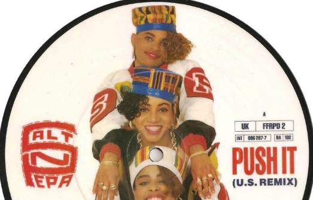